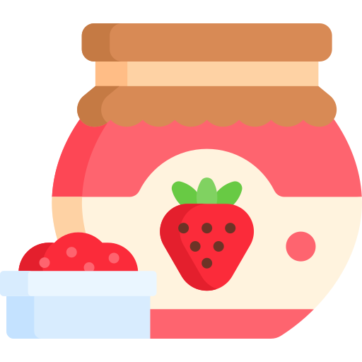

Tienda
Aquí puedes encontrar nuestros productos hechos con amor:
Dulces
Dulce de arracacha
Dulce de guineo
Dulce de ñame
Dulce de uchuba (arándano andino)
Mermeladas

Mermelada de berenjena
Mermelada de pimentón
Ponques (Cupcakes)

Ponque de chocolate
Ponque de fresa
Ponque de vainilla
Postres

Flanes (variedad de sabores)
Islas flotantes
Leche asada
Postre de limón
Tortas
Torta de Banano
Torta de Zanahoria
Torta de Naranja